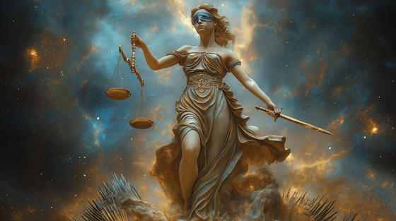

Themis, daughter of Uranus and Gaia, is the ancient personification of divine order, law, and cosmic balance. She predates the Olympians themselves. By Zeus, she bore the Moirai—the Fates—who spin and cut the threads of mortal and divine lives alike.
Unlike many of Zeus’s lovers, Themis is never portrayed as conquered. She is a force of inevitability, a silent, burning authority that even gods must obey.
This song captures her timeless resolve: law that neither love, rage, nor ambition can undo.
The Silent Flame
Before the gods, before the cries
I shaped the stars, I weighed the skies
Where chaos bled, I drew the line—
And placed the crown of law divine
No king escapes, no tyrant mends—
The thread I spin, the line that bends
The silent flame, the hidden brand
I burn beneath the gods' command
No voice can sway, no plea can tame—
The cold decree of silent flame
He sought my voice, he sought my womb
To birth the weavers of their doom
The Moirai rose, the Fates unchained—
Three hands to carve what gods disdained
No song delays, no sword defends—
The line I draw that never ends
The silent flame, the hidden brand
I burn beneath the gods' command
No voice can sway, no plea can tame—
The cold decree of silent flame
The scepter cracks, the altar sighs—
But still the loom of judgment flies
And though they rage, and though they roar—
Their fates are scribed forevermore
“Before Olympus... after Olympus... the law remains.”
The silent flame, the hidden brand
I burn beneath the gods' command
Their crowns may fall, their stars may wane—
But I endure, the silent flame
The wheel turns on, the blade descends—
And fate forgets the dreams of men